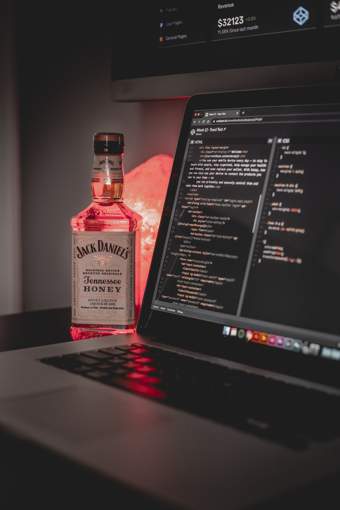

예능을 버리고 새롭게 선택한 개발자의 삶이란? 특히 웹 개발자와 데이터 엔지니어링에 대해 고민을 크게 하고 있던 차에, 이제는 생각을 굳혔다. 바로 웹개발자를 하기 로 말이다. 이제 막 시작을 해서 생활 코딩부터 시작하지만, 일단 재미가 있다. 
예능 피디를 포기한 이 순간. 2021년 09월 05일 새로운 모멘텀이다. 이제 오늘이 지나면 서기자의 스터디 정리 및 독서토론 정리를 해야한다. 물론, 그들은 내게 많은 도움을 줬다. 비록 돈을 내고 배웠지만, 진심을 다해 가르쳐 줬다. 또한 2년 가까운 스터디. 독토. 처음으로 책이라는 것에 흥미를 느끼게 해준 계기가 된 스터디이자 모임이다. 비록 내가 이 길을 포기한다고해도 분명 내 삶에 있어서 포기는 아니다. 새로운 길을 찾을 뿐. 끝으로 미생의 마지막회 오차장의 명언으로 마무리 하겠다. 인생에 있어 꿈은 아직 도달하지 못한 것일 뿐. 누구나 꿈하나를 가지고 살아간다.